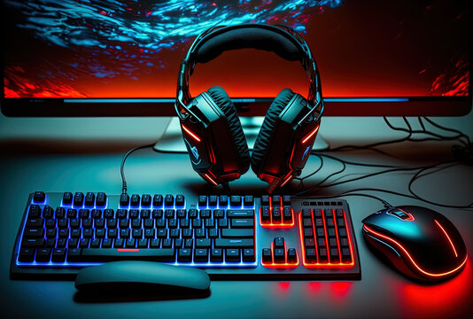
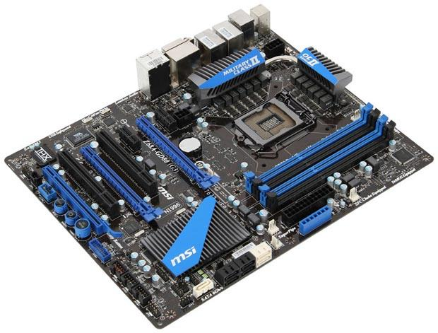
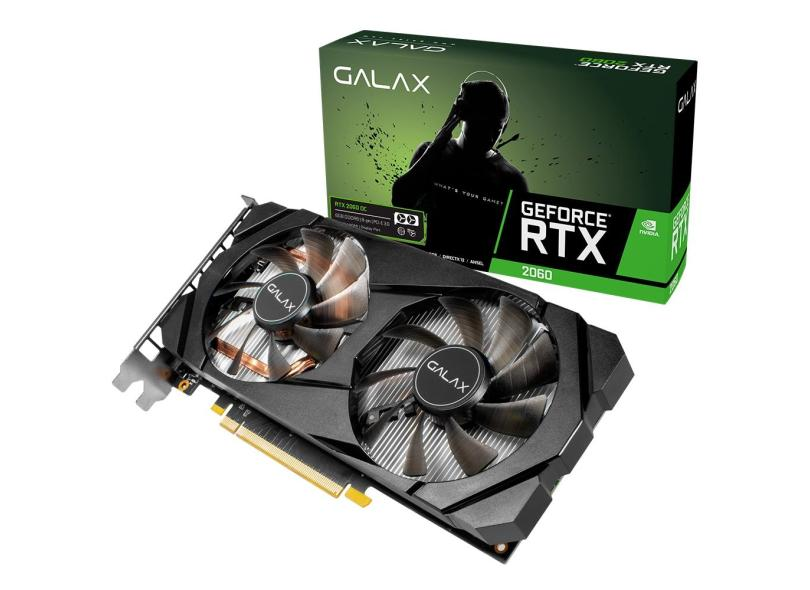
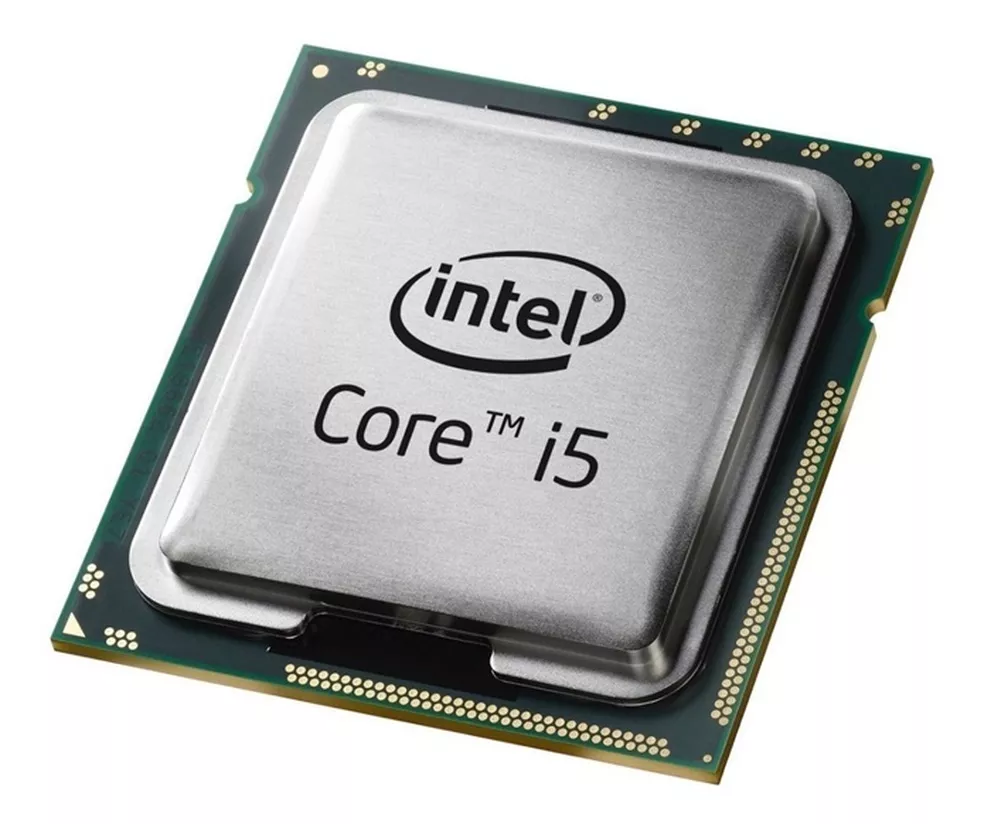
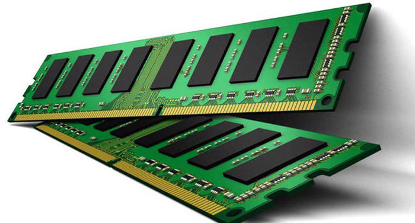
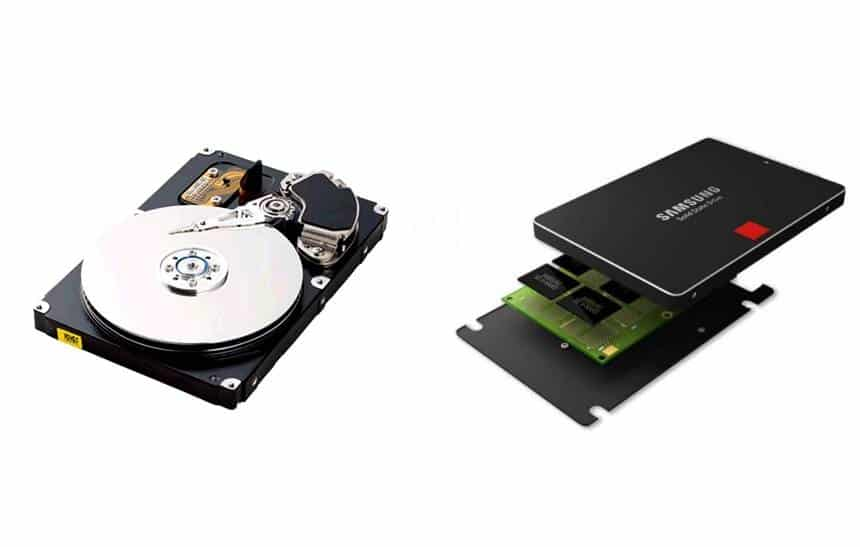
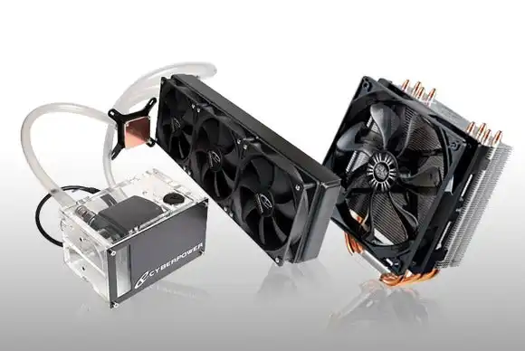
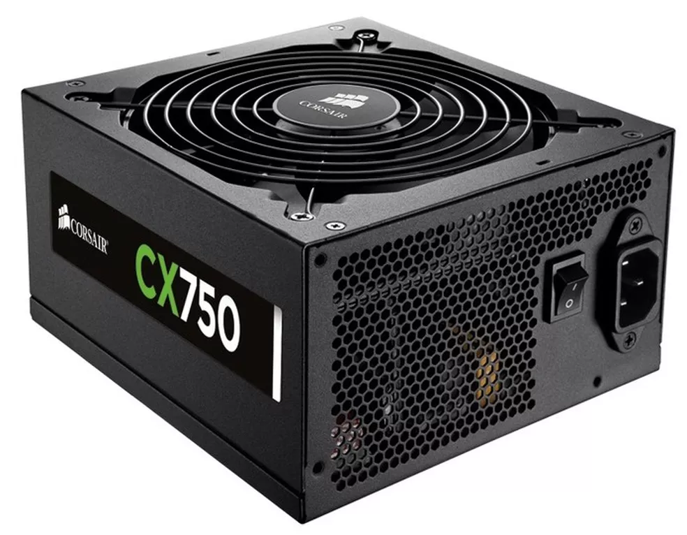
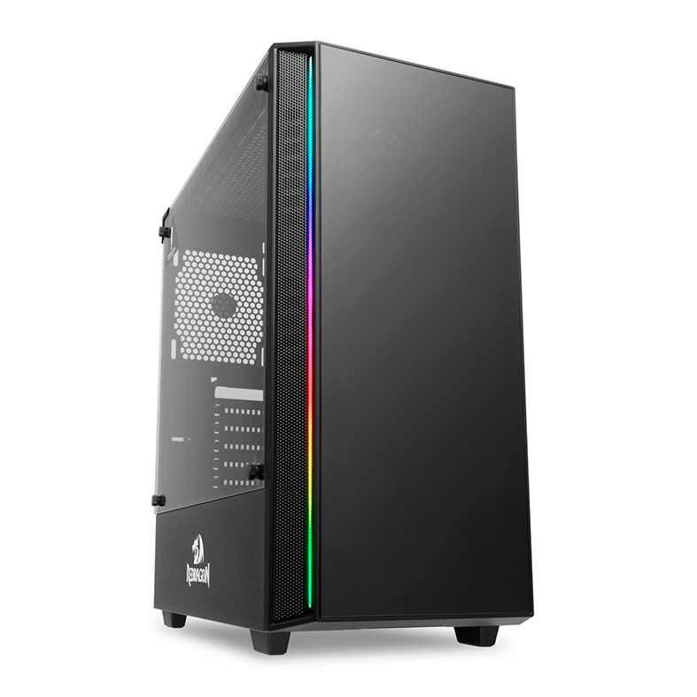

Você conhece os componentes de um PC Gamer ?
Um PC Gamer é um computador ou até mesmo um notebook destinado principalmente para jogos, sua estrutura é pensada para entregar um poder e perfomace princilpamente para jogos de alta qualidade, cotando peças que iram apresentar ótimo desempenho
Placa Mãe
A placa-mãe é o cérebro de uma máquina. A peça é essencial para conectar todos os elementos de um computador e organizá-los de forma adequada para que funcionem. É ideal escolher um produto compatível com o processador.
Placa de vídeo
As placas de vídeo podem ser interessantes para montar computadores que vão rodar programas ou jogos pesados. Este componente é necessário para otimizar a exibição de imagens e evitar travamentos do PC gamer.
Processador
O processador é responsável por interpretar e executar as tarefas do computador. Alguns destes chips apresentam mais de um núcleo, ou seja, conseguem gerenciar diversas tarefas de análise de dados e execução de tarefas simultaneamente.
Memória RAM
A memória RAM armazena as informações necessárias para que todos os sistemas de um computador possam funcionar normalmente. A peça atua como uma assistente para o processador: guarda os dados que posteriormente serão analisados pela CPU.
Armazenamento (SSD e HD)
O armazenamento é outra peça importante para montar um PC gamer. Os consumidores podem optar pelo SSD, que não possui partes mecânicas e móveis. Portanto, funciona de maneira eletrônica, o que garante o acesso imediato aos dados armazenados e deixa o computador mais rápido. Já o HD é um conjunto de discos móveis, utilizados simultaneamente para armazenar dados e controlar um braço mecânico responsável pela leitura e escrita de dados. O SSD é uma tecnologia mais moderna, mais rápida, e mais indicada para a inicialização de jogos. Porém, o HD apesar de ser mais lento, pode ser uma boa opção para quem busca mais volume de dados por preços mais baixos.
Sistema de resfriamento
O sistema de resfriamento é responsável por arrefecer os componentes internos do computador. Ele é importante para melhorar a performance do PC e evitar que a máquina fique sobrecarregada em caso de altas temperaturas. Existem dois tipos de refrigeração: o water cooler, que utiliza a água para o processo de resfriamento e é mais indicado para usuários que fazem uso extremo do processador. Já o air cooler utiliza um sistema de ventilação, o que é indicado para quem não precisa exigir muito do computador, já que o vento tem menor capacidade de dissipação de calor.
Fonte
A fonte transforma a voltagem elétrica que recebe da tomada para garantir o funcionamento correto do computador. Um PC gamer pode passar muito tempo ligado e a fonte serve para assegurar que toda a quantidade de energia elétrica transmitida está em uma voltagem adequada.
Gabinete
O gabinete é responsável por guardar todo o equipamento de um desktop. Ele armazena componentes como processador, fios, ventoinhas, HD e placa-mãe. O ideal é que este produto seja construído em material de qualidade para proteger as peças de sujeira e umidade.
